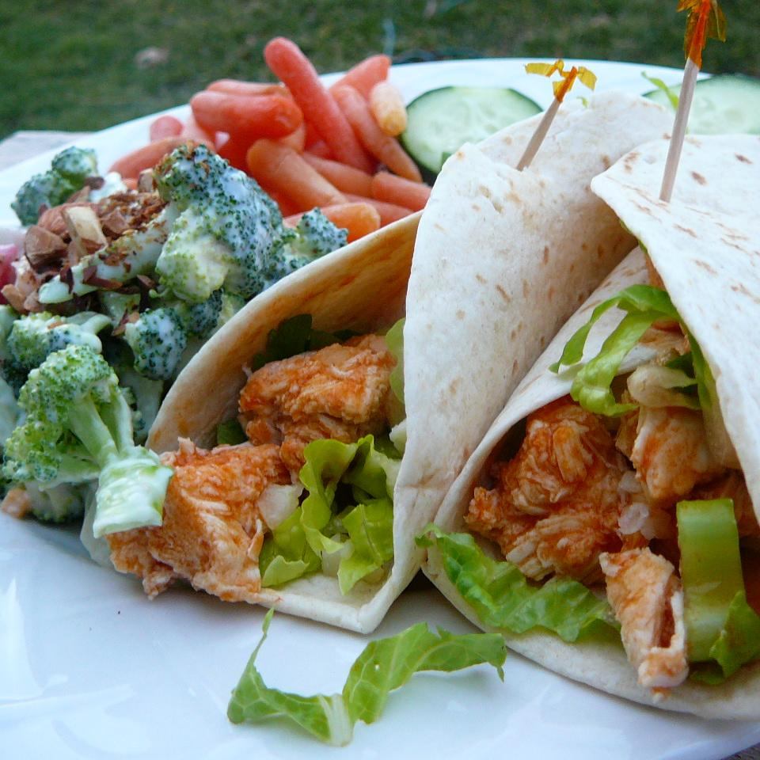

" BUFFALO CHICKEN WRAP "

Crispy Buffalo Wrap!
INGREDIENTS
- 1 tablespoon vegetable oil
- 1 tablespoon butter
- 1 pound skinless, boneless chicken breasts, cut into bite-size pieces
- ¼ cup hot sauce
- 4 (10 inch) flour tortillas
- 2 cups shredded lettuce
- 1 celery stalk, diced
- ½ cup blue cheese dressing
INSTRUCTIONS
- Heat the vegetable oil and butter in a large skillet over medium-high heat. Place the chicken in the pan; cook and stir until the chicken is no longer pink in the center and the juices run clear, about 10 minutes. Remove the pan from the heat. Pour the hot sauce over the cooked chicken and toss to coat.
- Lay out the flour tortillas and divide the chicken evenly among the tortillas. Top the chicken with lettuce, celery, and blue cheese dressing. Fold in the sides of the tortilla and roll the wrap burrito-style.